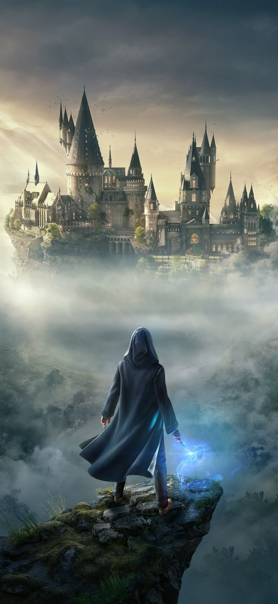

Articulo principal
Hogwarts como eje visual del castillo
El castillo organiza la experiencia visual: pasillos, escaleras, aulas y torres convierten el escenario en una pieza central de la narrativa de 1890 y del estudio de la magia antigua con Professor Fig.
La referencia al Castillo de Alnwick sirve para vincular la fantasia con una arquitectura real que comparte rasgos medievales, escolares y monumentales, muy cercanos al perfil de Hogwarts.